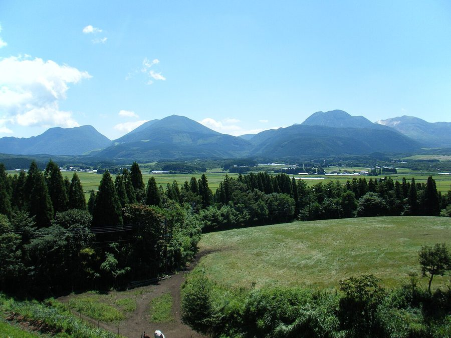
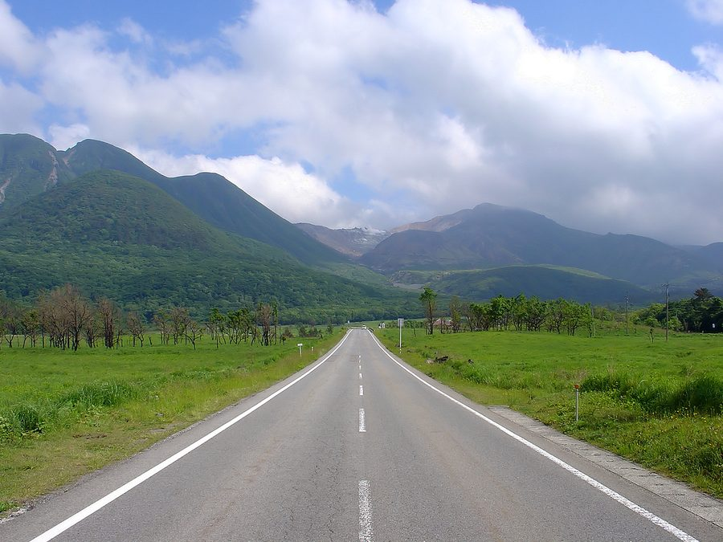
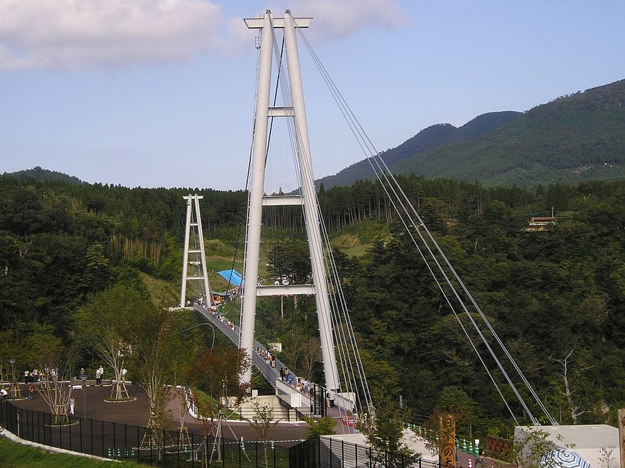
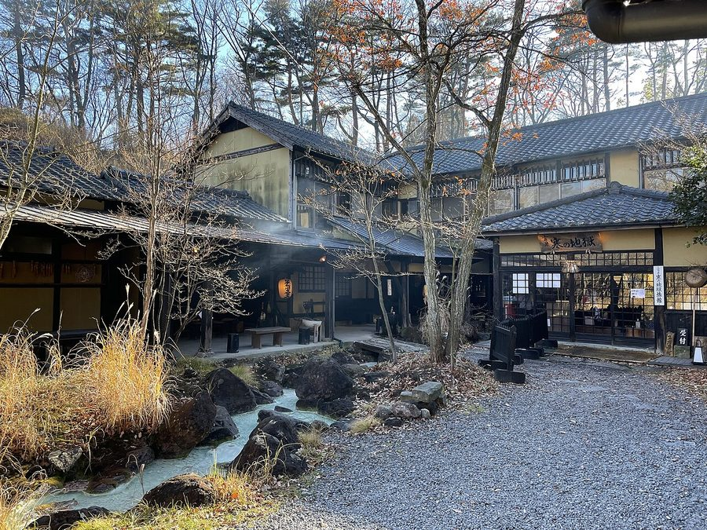

大分県玖珠郡九重町の日帰り温泉・銭湯・サウナ（50件）
寄り道スポット検索アプリ「ヨッテコ」の収録データから、大分県玖珠郡九重町の日帰り温泉・銭湯・サウナを営業時間・料金つきで一覧にしました（2026年8月時点）。
最も安いのは旅荘 ゆつぼ亭（150円）。最も遅くまで入れるのは筌の口温泉共同浴場（24:00まで）。朝風呂なら筋湯温泉 うたせ大浴場（6:00開店）。
大分県玖珠郡九重町はどんなまち？
数字で見る🔍大分県玖珠郡九重町
まちの横顔




- 地形: 九重町は大分県中西部にある町で、玖珠郡に属します。町域の全域が山地で、その多くが阿蘇くじゅう国立公園に指定されています。九重山を擁し、玖珠川が流れるほか、飯田高原と呼ばれる高原地帯もあります。南西部は熊本県と県境を接しています。
- 地熱資源: 町内には八丁原発電所をはじめとする地熱発電所が6カ所あり、地熱による発電量が多いことで知られています。電力自給率は全国の市町村で最大の2,293%に達しています。
寄り道充実度（全国偏差値）
偏差値・順位は、ヨッテコ収録データ（2026年8月時点・26,033件）を市区町村別に集計した施設数の全国分布（1,728市区町村）から毎回算出しています。カードを押すとカテゴリ別の分析に切り替わります。
日帰り温泉から見た大分県玖珠郡九重町
町内の日帰り温泉は50件、全国23位タイ（上位1.3%）。——寄り道できる湯の数は、全国でも上位クラス。
- 66%の店に露天風呂があります。全国水準は46%です。全域が山地で、九重山や飯田高原など阿蘇くじゅう国立公園の山々を抱える町。湯を外の空気ごと楽しむ形が、このまちの標準になっているようです。
- 源泉を使う店の割合は100%で、全国の67%を上回ります。沸かし湯ではなく源泉が前提で、温泉そのものがまちの資源になっています。
- サウナがある店は10%で、全国水準（52%）を下回ります。サウナで整えるより、湯そのものに浸かりに行くまちです。
- 夜遅くまで開いている店は24%にとどまります（全国40%）。夜の選択肢は限られるので、閉店時刻は先に見ておきたいところです。
- 入浴料の中央値は500円でした（判明39件）。全国の650円より23%低い水準です。気軽に立ち寄れる金額に収まっています。
出典: 施設データ=ヨッテコ収録データ（26,033件・2026年8月時点）。偏差値・全国順位・全国水準は全1,728市区町村の分布から毎回算出。 / 人口=総務省「住民基本台帳に基づく人口、人口動態及び世帯数」（2026年1月1日現在） / 面積=国土地理院「全国都道府県市区町村別面積調」（2026年4月1日時点） / 森林率=農林水産省「2025年農林業センサス（農山村地域調査）」市区町村別林野率（2025年、林野率（林野面積÷総土地面積）） / 年平均気温=気象庁「平年値（1991-2020年）」。市区町村の代表点（国土交通省「大字・町丁目レベル位置参照情報」）から最も近い観測点の値 / まちの解説=日本語版Wikipedia「九重町」（https://ja.wikipedia.org/wiki/九重町、2026年8月21日取得、CC BY-SA 4.0） / 写真=Wikimedia Commons（各キャプションに作者・ライセンスを記載）
曜日別の営業施設数
| 月 | 火 | 水 | 木 | 金 | 土 | 日 |
|---|---|---|---|---|---|---|
| 49 | 46 | 45 | 48 | 48 | 49 | 49 |
水曜日が最も休みが多く（各5件が定休）、年中無休は45件です。※営業時間データのある50件で集計
入浴料金の分布（大人）
| 500円以下 | 26件 | |
| 501〜800円 | 5件 | |
| 801〜1,200円 | 2件 | |
| 1,201円以上 | 6件 |
料金が確認できた39件で集計。
施設一覧
| 施設 | 営業時間 | 料金（大人） |
|---|---|---|
| NU:KUJU ヌクヌクノ湯 天然温泉露天風呂サウナ NU:KUJU（ヌークジュー）は大分県九重町の自然体験フィールド。源泉かけ流しの高炭酸泉「ヌクヌクノ湯」は、全身の血流を… | 10:00〜20:00 | 800円 |
| たから温泉 天然温泉露天風呂 | 09:00〜21:00 | 300円 |
| ひまつぶしの湯 天然温泉露天風呂 | 09:00〜22:00 | 300円 |
| ふだんぎの湯 天然温泉露天風呂 | 08:00〜22:00 | 500円 |
| みはらしの宿 日向 天然温泉露天風呂 | 12:00〜22:00 | 200円 |
| オーベルジュコスモス 天然温泉露天風呂 | 15:00〜24:00 ※曜日により異なる | 500円 |
| ホテル龍泉閣 天然温泉露天風呂 宝泉寺温泉の源泉かけ流しを楽しめるホテル。「べっぴんの湯」の別称で知られる単純泉が特徴。ホタルの名所としても有名です。 | 15:00〜18:00 | 800円 |
| 九酔渓温泉 つれづれ 天然温泉サウナ 九酔渓温泉の宿。世界屈指の炭酸ガスを含む温泉を、複数タイプの露天風呂で楽しめる。 | 11:00〜22:00 | 1,800円 |
| 九重いやしの里 ホテル大高原 天然温泉露天風呂 標高1,000mの九重町の筋湯温泉にある宿。7つの貸切湯と大浴場で源泉かけ流しが楽しめ、女湯には打たせ湯、男湯には蒸し湯… | 15:00〜23:00 | — |
| 九重星生ホテル 山恵の湯 天然温泉露天風呂 Mountain spa hotel with 4 types of natural hot spring featur… | 10:00〜19:30 | 1,000円 |
| 名水の宿 宝珠屋 天然温泉露天風呂 筋湯温泉の老舗旅館。ひのき風呂・岩風呂・蔵石風呂の3種類の趣異なる貸切風呂。天然かけ流しの源泉。 | 12:00〜16:00 | 2,000円 |
| 壁湯天然洞窟温泉 旅館 福元屋 天然温泉露天風呂 300年以上前から自噴している天然温泉で知られる秘湯。岩壁が川面に迫る景観と、神秘的な洞窟温泉が特徴です。 | 10:00〜16:00 | 400円 |
| 宝泉寺温泉 せせらぎの湯 天然温泉露天風呂 森林と清流に囲まれた天然掛け流し温泉施設。4つの泉源から湧き出る温泉は効能が多く、柔らかい肌ざわりが特徴。 | 08:00〜20:00 | 500円 |
| 宝泉寺温泉 民宿山彦 天然温泉 | 10:00〜16:00 | 300円 |
| 家族風呂 紅葉谷の湯 天然温泉露天風呂 | 10:00〜21:00（火・水休） | 1,500円 |
| 宿房 花しのぶ 天然温泉露天風呂 筋湯温泉の隠れ家旅館。日本一の高さを誇る打たせ湯「うたせ大浴場」が自慢。5種類の趣異なる貸切風呂。 | 11:00〜15:00 | — |
| 寒の地獄旅館 天然温泉サウナ 毎分2t超の豊富な湧出量を誇る源泉かけ流し温泉。切石風呂に檜風呂、家族湯、冷泉サウナなど。 | 10:00〜15:00 | 700円 |
| 山あいの宿 喜安屋 天然温泉露天風呂 清らかに澄み切ったナトリウム・塩化物泉で、なめらかな肌ざわりが特徴。24時間100%かけ流しで、雑木林を吹き抜ける風の中… | 10:00〜17:00 | 500円 |
| 川底温泉 旅館 螢川荘 天然温泉露天風呂サウナ 奥豊後の秘湯。開湯901年の歴史を持ち、源泉掛け流しの温泉。大浴場・露天風呂・貸切風呂・サウナを備える。 | 10:00〜17:00 | 1,000円 |
| 旅荘 ゆつぼ亭 天然温泉露天風呂 湯坪温泉の自家源泉を持つ旅館。趣異なる6つの貸切風呂で源泉かけ流し。無色透明のアルカリ性単純温泉。 | 00:00〜24:00 | 150円 |
| 旅館 ゆのもと荘 天然温泉露天風呂 Yunomotosou in Kinyu hot spring. 4 unique baths: complete ou… | 10:00〜15:00 | 1,500円 |
| 日帰り家族風呂 生竜温泉七福 天然温泉露天風呂 こだわりの湯。天然温泉・家族風呂。7つの個性豊かな風呂で四季折々の景色を楽しめる。 | 10:00〜20:30 | 1,700円 |
| 民宿水分村 天然温泉露天風呂 九重町の民宿。天然温泉の屋内大浴場を備え、ペット同宿可能。アットホームな雰囲気が特徴。 | 10:00〜16:00 | — |
| 法華院温泉高原テラス 花山酔 天然温泉 Mountain hotel with day-use access to four distinct natural … | 11:00〜19:00 | 500円 |
| 渓谷の宿 二匹の鬼 天然温泉露天風呂 渓谷の宿 二匹の鬼。川底温泉の露天風呂から九酔渓の景色を眺められる。川のせせらぎが心身を癒す。 | 11:00〜16:00 | 200円 |
| 湯かけの里 花草原 天然温泉露天風呂 | 11:00〜15:00 | 500円 |
| 湯坪温泉 共同浴場 河原湯温泉 天然温泉 | 09:00〜18:00 | 200円 |
| 湯坪温泉 懐古乃宿 萬作屋 天然温泉 湯坪温泉の里山に位置する料理宿。無料の貸切湯4室でプライベートな温泉体験。源泉温度85.5℃で加水あり。 | 09:00〜18:00 | — |
| 湯坪温泉 民宿 千鳥 天然温泉露天風呂 | 11:00〜16:00 | 200円 |
| 湯坪温泉 民宿 河原湯 天然温泉 くじゅう連山の山間に位置する静かな温泉地。築45年の日本家屋で、大自然の醍醐味を味わえる露天風呂と地元産食材を用いた料理… | 10:00〜20:00 ※曜日により異なる | 150円 |
| 湯坪温泉 民宿 麓 天然温泉露天風呂 九重町湯坪温泉の民宿。泉水山を眺める露天風呂がかけ流しで24時間利用可。 | 13:00〜21:00 | — |
| 炭酸温泉 山里の湯 天然温泉サウナ Snapshot is ゆる～と-like review page, not facility details. | 09:00〜17:00（火・水休） | — |
| 牧の戸温泉 九重観光ホテル 天然温泉露天風呂 硫黄の香りただよう源泉掛け流し露天風呂。九重連山と三俣山を眼前に望む。 | 12:00〜20:00 | 500円 |
| 生竜龍神 長寿の湯 天然温泉 | 09:00〜18:00 | 500円 |
| 筋湯温泉 うたせ大浴場 天然温泉 標高1000mの筋湯温泉にある共同浴場。3メートルの高さから落ちる「日本一のうたせ湯」が自慢で、肩こりや腰痛に効果がある… | 06:00〜21:30 | 400円 |
| 筋湯温泉 せんしゃく湯 天然温泉 | 07:00〜21:00 | 400円 |
| 筋湯温泉 山荘やまの彩 天然温泉露天風呂 Yamanoiro mountain lodge with 3 unique private family baths:… | 11:00〜14:00 | 800円 |
| 筋湯温泉 旅館 白滝 天然温泉露天風呂 | 11:00〜15:00 | — |
| 筋湯温泉 旅館ふるさと 天然温泉露天風呂 涌蓋山の麓、標高1000mの筋湯温泉にある気軽に泊まれる旅館。5つの貸切風呂で源泉かけ流し。 | 10:00〜15:00 | 150円 |
| 筋湯温泉 朝日屋旅館 天然温泉露天風呂 Small family-run Asahiya inn in Kinyu hot spring foothills. … | 11:00〜15:00 | — |
| 筋湯温泉 薬師湯 天然温泉 筋湯温泉の共同浴場のひとつで、露天風呂と内湯からなる。日本一の打たせ湯が有名で、肩こりや腰痛に効果がある。 | 07:00〜22:00 | 400円 |
| 筋湯温泉 露天岩ん湯 天然温泉露天風呂 標高1000mの山峡に湧く歴史ある温泉。日本一の打たせ湯で知られ、3mの高さから落ちる18本の打たせ湯がマッサージ効果を… | 07:00〜22:00 | 400円 |
| 筌の口温泉 旅館 新清館 天然温泉露天風呂 黄土色の独特な泉質で知られる炭酸水素塩泉の源泉。木漏れ日が差し込む露天風呂が特徴の旅館です。 | 09:00〜21:00 | 500円 |
| 筌の口温泉共同浴場 天然温泉 Historic communal hot spring dating back to 1728, located in… | 00:00〜24:00 | 300円 |
| 自炊旅館 わかば荘 天然温泉 | 11:00〜16:00 | — |
| 芸舞温泉 湯守 金獅子 天然温泉露天風呂 加温なし、加水なし、チートなし。源泉掛け流しの大浴場。 | 10:00〜18:00 | 700円 |
| 里山温泉 家族湯 四季彩の湯 天然温泉 Family bath facility featuring skin-friendly alkaline minera… | 12:00〜21:00 ※曜日により異なる | 1,500円 |
| 長者原ヘルスセンター 天然温泉露天風呂 | 11:00〜17:30 | 350円 |
| 高原の隠れ家 スパ・グリネス 天然温泉 雄大な自然を感じながら。阿蘇五岳側の客室からはパノラマビュー。 | 12:00〜18:00 | — |
| 龍門滝乃湯 天然温泉 | 10:00〜20:00 | — |